入居・利用契約、ご家族への案内、口座振替の登録、毎月の自動引き落とし、未収時の再請求まで。Web口振だけではない、医療・介護・福祉の現場に最適化された請求オペレーションを、CarePAY が一つに束ねます。通帳・銀行印・来店は、すべて不要です。
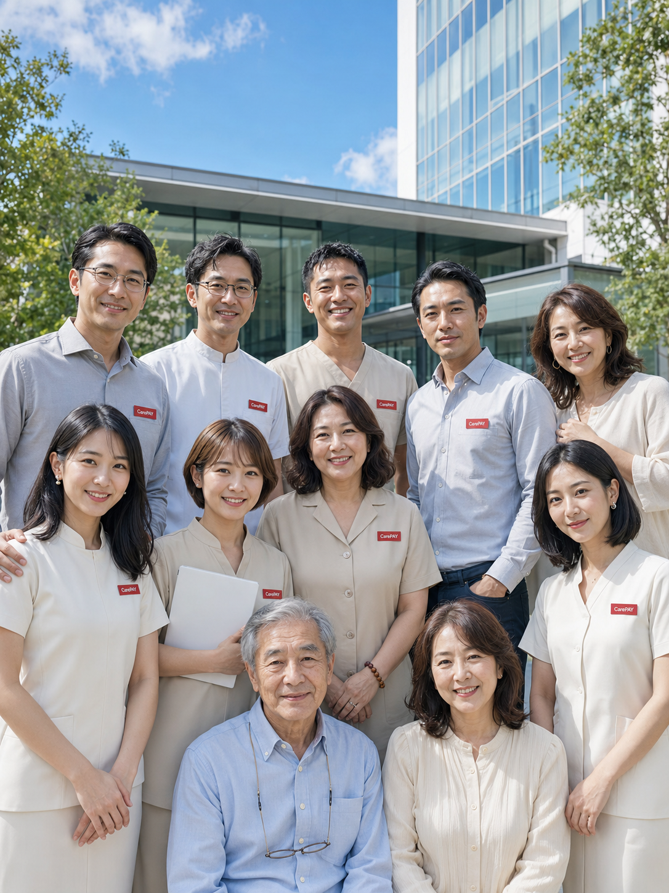
🏥医療・介護・福祉の現場では、毎月の利用料回収のための口座振替手続きが、事業者とご家族の双方に重い負担をかけています。
口座振替依頼書に手書き、通帳を見ながら口座番号を転記、銀行印を押印。1枚でも記入ミスや印鑑相違があれば、やり直しと郵送の往復が発生します。
ご高齢のご本人やご家族が遠方に住むケースも多く、窓口来店や書類郵送のたびに時間がかかり、回収開始が後ろ倒しになります。
金融機関や決済代行を経由する従来型の口座振替は、審査・登録に時間がかかり、最初の引き落としまで長い待ち時間が生じます。
CarePay は、紙の口座振替に必要だった「通帳・銀行印・来店」をすべて不要にし、ご利用者・ご家族・事業者の手間を最小化します。
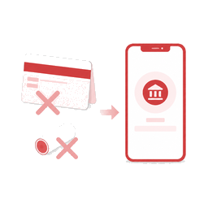
📄通帳コピーや銀行印は一切不要。画面の案内に沿って入力するだけで口座振替の登録が完了。記入ミスや印鑑相違による差し戻しが起きません。
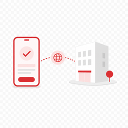
📱ご本人やご家族が遠方にいても、届いたリンクをスマホで開いて手続きするだけ。窓口へ行く必要も、書類を郵送する必要もありません。
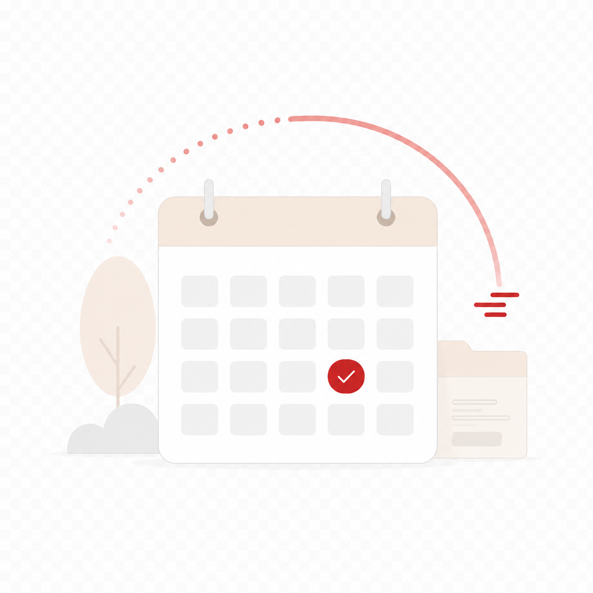
⚡従来は1〜2か月かかっていた回収開始を、大幅に短縮。登録したその場から決済を開始できるため、初月から取りこぼしなく回収できます。
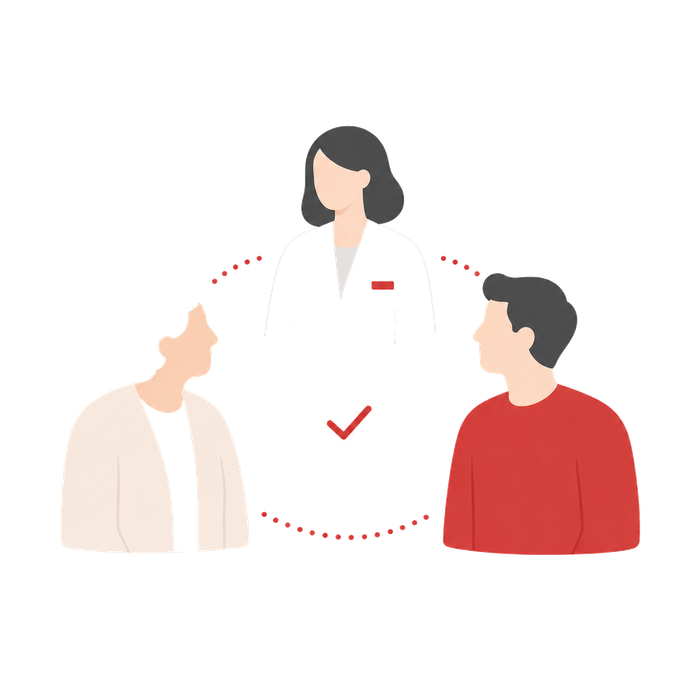
👨👩👧ご家族へのSMS／メール案内、電子同意、電子署名、進捗の見える化を一気通貫で。既存の口振サービスにはない、現場専用の家族導線です。
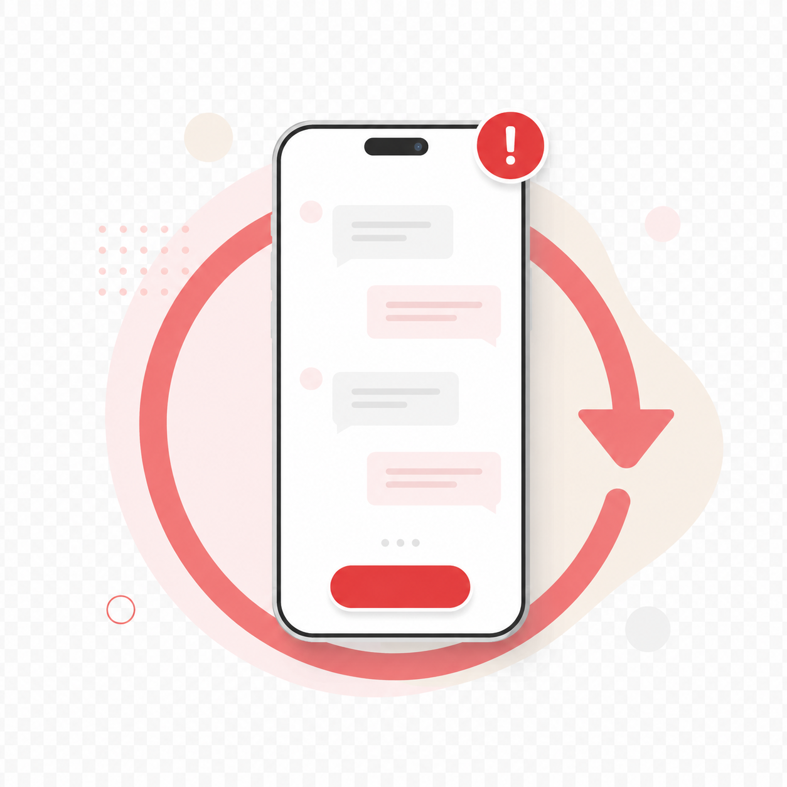
🔁引き落とし失敗を検知すると、ご家族のスマホへ自動で再請求のリンクを送信。事務が電話・郵送で督促する負担を減らします。
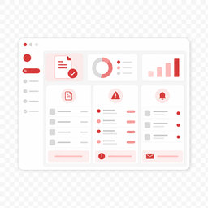
📊誰が、いつ、いくら、どの方法で、どこまで進んでいるか。事業者の管理画面で、毎月の回収状況を一覧で把握できます。
未収・督促段階・滞留日数（エージング）・回収予定を、CarePAY 一つで管理。CSV エクスポートや一括督促SMSにも対応し、債権管理システムを別途導入する必要がありません。
▶ 債権管理のデモを見る
医療（保険診療／自費）、介護保険サービス、介護保険施設（老健・介護医療院）、居宅サービス（医療費控除対応）、福祉サービス。業態ごとに国が定めた必須記載項目を網羅したテンプレートで、請求書・領収書・医療費明細書・医療費控除対象額の明細などをアプリ内で電子発行。タイムスタンプ＋ハッシュ署名で改ざん防止、家族のスマホへそのまま送信できます。
▶ 発行画面のデモを見る
CarePay は、決済基盤に Square を採用。ご家族が口座情報を紙で書く代わりに、画面上で安全に支払い方法を登録します。毎月の自動引き落としという体験はそのままに、紙の手続きだけを取り除きます。
※ CarePay は Square のオンライン決済・継続課金を用いて、紙の口座振替を不要にするサービスです。支払い方法・審査状況により決済開始までの期間は異なります。従来型の銀行口座振替（収納代行）も選択でき、その場合は金融機関側の登録期間（目安1〜2か月）を要します。
確実なスケジュールで進められます。下記は標準的な進行の目安です。
CarePay に申し込み、Square 加盟店アカウントを連携。事業者情報・振込先口座を登録します。
1〜3営業日ご家族・ご本人へSMS／メールで登録リンクを送信。来店不要で、その場から手続きできます。
即時画面に沿って支払い方法を登録し、電子同意・電子署名。通帳・銀行印は不要です。
当日（数分）登録完了後、毎月の自動引き落とし（継続課金）を開始。未収時は自動で再請求します。
最短即日実行開始時期は、事業者さまの申込状況・本人確認・支払方法により前後する場合があります。具体的な開始日は、お申し込み後にスケジュールとしてご提示します。
毎月の利用料・サービス料を口座振替で回収する、あらゆる事業者さまにご利用いただけます。
🏥病院・クリニック・歯科・訪問診療・調剤薬局。診療費や自費サービスの継続的な回収に。
🏡有料老人ホーム・サ高住・訪問介護・通所介護・居宅。月額利用料や実費の回収に。
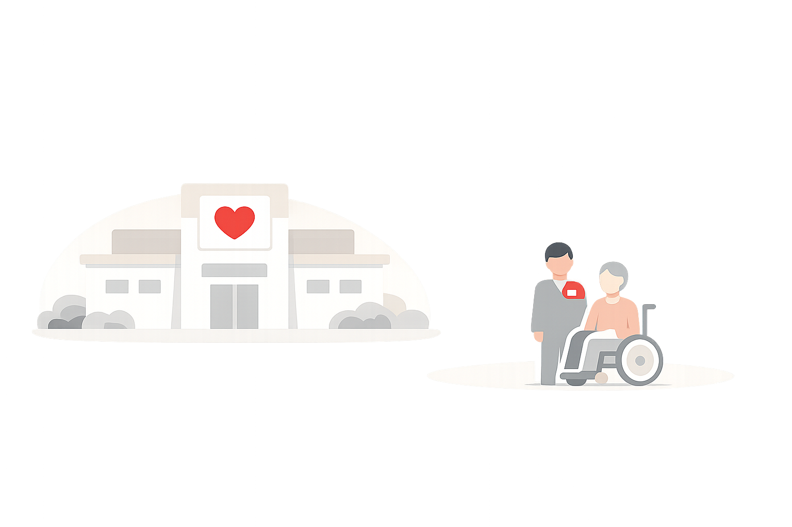
🤝障害福祉サービス・児童福祉・就労支援・グループホーム。各種利用料の回収に。
金融・医療事務・介護の現場経験を持つメンバーが、CarePAY を運営しています。請求と回収の業務を、一番リアルに理解する人たちです。
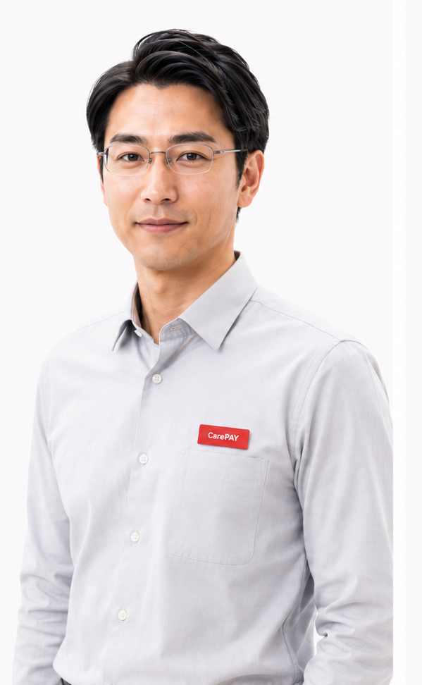
大手銀行で法人営業を10年。決済代行・収納代行の仕組みに精通。事業者さまの導入をワンストップで伴走します。
有料老人ホームで月次の請求・口振管理を担当。紙の依頼書と未収の現場を知り尽くす。事務オペレーション設計担当。
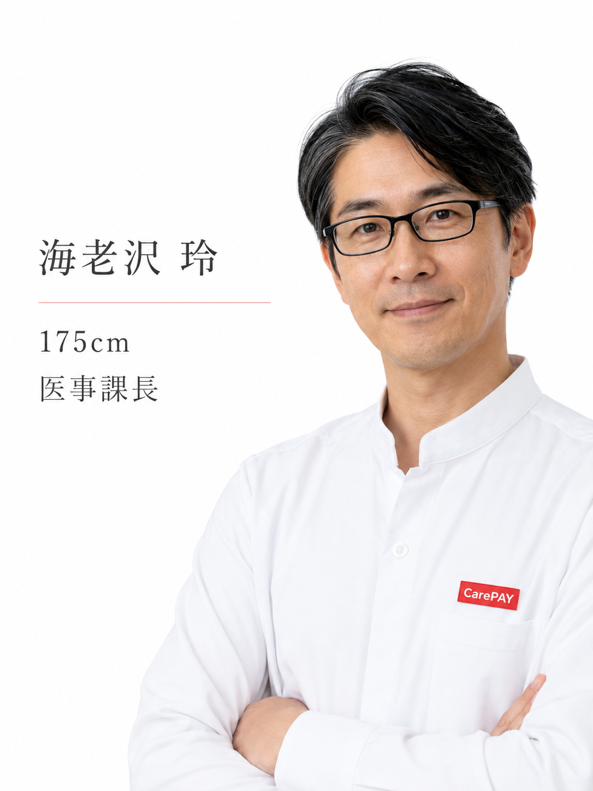
中規模病院の医事課長として、自費・継続診療費の回収業務を統括。医療現場の請求実務を CarePAY に持ち込んでいます。
世界中で利用される決済プラットフォーム Square のセキュアな仕組みを採用。カード情報は Square 社のシステムに直接送信され、CarePay や事業者のサーバーには保存されません。